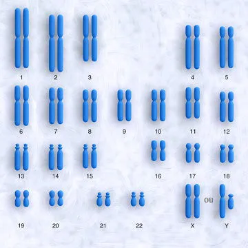

Todos os indivíduos são detentores de informações genéticas que herdaram dos seus progenitores e todas as células do seu corpo possuem uma cópia desse património, mas as informações que se expressam podem variar, dando origem a células de características diferentes. Em organismos multicelulares estas diferenças na expressão dos genes não originam apenas células ou tecidos, mas também são responsáveis por determinar as características do próprio indivíduo.
Os trabalhos de cientistas como Morgan, Mendel, Watson e Crick e de muitos outros, permitiu saber que as informações hereditárias são transmitidas ao longo das gerações segundos certos padrões e que, essa informação, tem um suporte físico - o material genético.
O estudo do material genético, assim como da transmissão da informação vinculada por ele, pode ser encarado de várias formas e a vários níveis.
A maioria dos organismos procariontes apenas apresenta 1 molécula de DNA dissociada de qualquer proteína e que se encontra dispersa no hialoplasma, enquanto que nos indivíduos eucariontes a informação genética está distribuída por várias moléculas de DNA associadas a proteínas, as histonas. Cada porção de DNA associado a histonas constitui um filamento de cromatina, que geralmente se encontram dispersos no núcleo da célula.
Quando a célula se encontra em divisão estes filamentos sofrem um processo de condensação, tornando-os curtos e espessos, podendo assim ser observados ao microscópio. Como estes filamentos apresentam afinidade a corantes, são designados por cromossomas (tanto na forma espessa como na condensada).
Assim, pode considerar-se que os cromossomas estão presentes no núcleo das células e que estes contêm os genes. Ao conjunto dos genes existentes num indivíduo chamamos genoma. É de recordar também que o processo que permite que um núcleo se divida em dois núcleos-filhos, cada um com uma cópia de todos os cromossomas do núcleo original e consequentemente de toda a informação genética, designa-se por mitose.

Cada organismo multicelular é constituído por um elevado número de células que se associam e formam tecidos, que por sua vez formam os órgãos que operam entre si e formam um organismo. A expressão do genoma em cada uma das células de um organismo multicelular produz um efeito global que constitui o fenótipo de cada indivíduo. No processo reprodutivo os indivíduos partilham informação genética, existindo também alteração e transmissão de genomas entre indivíduos. Neste processo podem ocorrer anomalias genéticas que levam ao desenvolvimento de certas doenças e outros problemas. Assim sendo, o estudo da Genética pode focar-se na análise das diferentes formas como os genes são transmitidos de geração em geração ou em problemas associados à expressão ou não de certos genes e ao consequente desenvolvimento de anomalias.
Determinação genética do sexo:
A Teoria Cromossómica da Hereditariedade afirma que os genes são responsáveis pelas características do indivíduo e, na maioria das espécies de animais, a determinação do sexo dos indivíduos não é exceção e assenta no tipo e no número de cromossomas que estes possuem. Contudo, em algumas espécies de insetos a determinação do sexo é feita com base no número de cromossomas que cada indivíduo possui. No caso das abelhas, as fêmeas são diploides, enquanto que os machos são haploides. Nos grupos de animais em que a determinação do sexo envolve apenas diferenças ao nível dos heterossomas, é possível identificar diferentes mecanismos. No caso dos mamíferos, os indivíduos do sexo feminino possuem dois cromossomas X, enquanto que os indivíduos do sexo masculino possuem um X e um Y. No caso das aves, os machos possuem dois heterossomas iguais ZZ e as fêmeas um par ZW. No caso de insetos como os gafanhotos, o sexo pode ser determinado através da ausência ou da presença em dobro de um dos heterossomas.
Os cariótipos de indivíduos da espécie humana revelam a presença de 22 pares de autossomas, podendo o 23º e último par variar (XX ou XY). Os cromossomas X possuem maiores dimensões do que os Y e já foram encontrados mais de mil genes em cromossomas X, enquanto que o número de genes encontrados em cromossomas Y não atinge uma centena.
Apesar de os cromossomas X e Y serem diferentes, durante a meiose estes atuam como se fossem homólogos. Assim, cada gâmeta masculino transporta 22 autossomas e 1 cromossoma sexual (heterossoma), com igual probabilidade de ser um cromossoma X ou Y. Já os gâmetas femininos possuem dois cromossomas sexuais iguais (X), ou seja, para além dos 22 autossomas também são portadores de um cromossoma X. Assim, o sexo do novo ser é determinado pelo espermatozoide (gâmeta masculino). Caso este transporte um cromossoma X, o novo indivíduo será do sexo feminino; caso transporte um cromossoma Y, o novo indivíduo será do sexo masculino.

Apesar de o cromossoma Y possuir um reduzido número de genes, este tem um papel fundamental na determinação do sexo. Foi identificada uma região neste tipo de cromossoma, denominada SRY, que determina a masculinidade. Até às 6 semanas de gestação não se manifestam quaisquer diferenças sexuais no embrião, mas a partir dessa altura, um gene da região referida anteriormente é ativado nos rapazes e inicia a produção de hormonas sexuais que estimulam a diferenciação dos órgãos sexuais. A ausência deste tipo de hormonas leva à diferenciação de órgãos sexuais femininos.
Expressão génica:
Nos organismos multicelulares adultos existe uma enorme variedade de células em termos de forma, função, tipo de proteínas sintetizadas, etc. Contudo, excetuando raros casos, todas as células de um organismo possuem a mesma informação genética pois resultam da mesma célula inicial – o ovo. As células tornam-se diferentes quer a nível estrutural, quer a nível molecular devido a um processo de diferenciação celular, resultante da expressão e regulação dos seus genes.
Mesmo nos organismos mais simples (os procariontes) existe um processo de regulação da expressão génica, fundamental para a sobrevivência dos mesmos. Neste tipo de seres vivos, este processo está relacionado com a eficiência energética e o consumo dos recursos disponíveis, permitindo que estes organismos ajustem o seu metabolismo às alterações que surgem nos seus meios. Em 1961, François Jacob e Jacques Monod apresentaram os resultados dos seus trabalhos relativos à regulação genética em bactérias, debruçando-se sobre o funcionamento dos genes envolvidos no metabolismo da lactose na bactéria Escherichia coli. Se no meio existir glicose, a bactéria irá utilizá-la como fonte de energia contudo, se a sua concentração for reduzida ou atá nula, a bactéria poderá utilizar a lactose como fonte alternativa de energia.
O operão da lactose é formado por 3 genes estruturais (lac Z, lac Y e lac A) que codificam as enzimas necessárias ao metabolismo da lactose e por 2 segmentos de DNA que controlam a transcrição de genes estruturais – o promotor e o operador. O promotor corresponde à região onde a enzima RNA polimerase (responsável pela transcrição de genes estruturais) se liga. Já o operador controla o acesso desta enzima aos genes que ela transcreve. Quando no meio não está presente a lactose, um repressor está ligado ao operador, bloqueando a transcrição dos genes estruturais. Esta proteína repressora é codificada por um gene que se situa fora do operão denominado de gene repressor ou gene regulador. Ao contrário dos genes estruturais, o gene regulador é constantemente transcrito e traduzido. Assim, a bactéria produz constantemente pequenas quantidades de proteína repressora. Por outro lado, quando no meio existe lactose, esta molécula liga-se ao repressor e altera a sua conformação até que este se torne inativo, desligando-se do operador. Desta forma, o operador fica livre, permitindo que os genes estruturais sejam transcritos e traduzidos, formando as enzimas necessárias ao metabolismo da lactose, que funciona como um indutor, uma vez que a sua presença permite ativar o operão. Por isto, o operão da lactose é, por vezes, chamado operão indutível. Os operões indutíveis estão, normalmente, associados a reações catabólicas como o catabolismo de glícidos. No entanto, existe outro tipo de operões - operões repressíveis - que estão associados ao controlo de genes envolvidos no anabolismo de aminoácidos (essenciais à célula), por exemplo. O operão triptofano (operão trp) é um exemplo de um operão repressível.
A existência deste regulão permite regular simultaneamente um conjunto de operões envolvidos no catabolismo de glícidos. Ao ativar estes operões com o mesmo regulador, é obtida uma conversão eficiente de diferentes glícidos em glicose que permite satisfazer as necessidades da célula deste nutriente mais rapidamente. Nos eucariontes, os genes não estão associados a operões, no entanto, as células eucarióticas possuem vários mecanismos de regulação, assegurando que determinados genes são ativos enquanto outros são bloqueados em resposta a sinais provenientes quer do meio interno quer do externo.
Material genético extranuclear:
Nos seres procariontes, o material genético encontra-se no citoplasma da célula, enquanto que nos eucariontes, a informação genética encontra-se praticamente toda armazenada no núcleo da célula, sob a forma de cromossomas. No entanto, mesmo nos organismos eucariontes é possível encontrar material genético fora do núcleo, nomeadamente nas mitocôndrias e nos cloroplastos.
Uma das primeiras experiências que demonstram um padrão de características hereditárias associadas a genes extranucleares foi realizada por Carl Correns, em 1909, quando estudava a transmissão hereditária da cor das folhas de Mirabilis jalapa. Nesses estudos, Correns reparou que a transmissão da característica da coloração das folhas desta planta não obedecia à lei da segregação de Mendel.
Para além disso, reparou que a pigmentação das folhas dependia apenas do progenitor feminino, sem qualquer tipo de influência do progenitor masculino. Posteriormente, novas investigações viriam determinar que o padrão da coloração das folhas era determinado por genes presentes nos plastídeos. De facto, na maioria das plantas, o zigoto recebe os seus plastídeos do citoplasma do gâmeta feminino, ou seja, compreende-se que a coloração das folhas fosse transmitida apenas pela linha feminina.
Nos mamíferos, incluindo o Homem, também se verifica que existem genes que apenas são transmitidos por um dos progenitores, não respeitando a lei da segregação, segundo a qual os 2 progenitores contribuem de forma igual para a formação da descendência. As células humanas possuem mitocôndrias portadoras de cópias de uma molécula de DNA com cerca de 37 genes, alguns dos quais são responsáveis pela produção e proteínas envolvidas na respiração celular.
O modo de transmissão de genes contidos nestas moléculas de DNA difere para o material genético nuclear, afastando-se dos princípios mendelianos. À semelhança do que acontecia com as plantas estudadas por Correns, o material genético presente nas mitocôndrias é transmitido à descendência apenas pelas mães, uma vez que o espermatozoide não contrui com as mitocôndrias para a formação do zigoto.